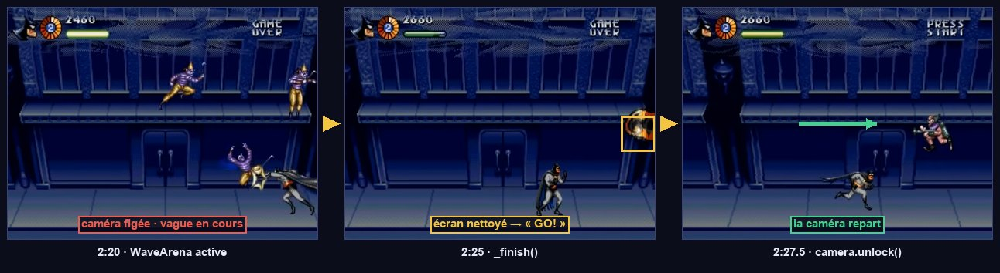
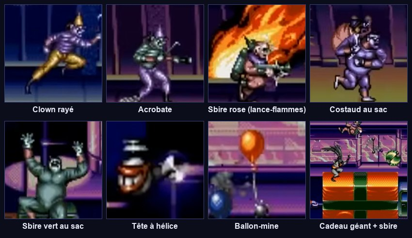
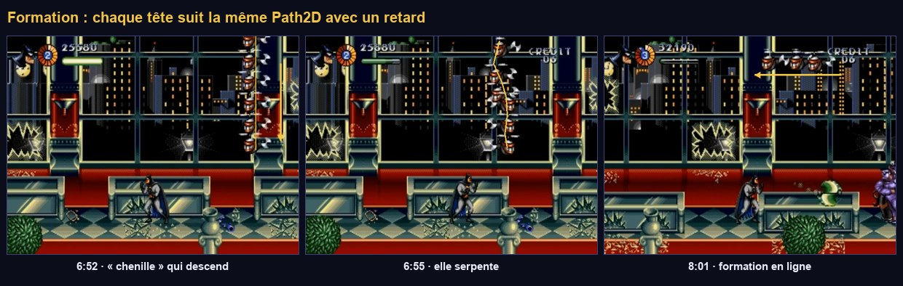
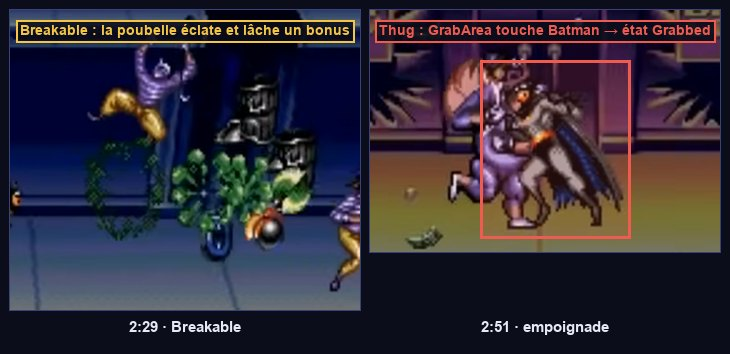

Ennemis et arènes à vagues
Le cœur du rythme de Batman & Robin : la caméra se fige, des vagues d'ennemis arrivent jusqu'à un quota, « GO! » s'affiche, on avance. On écrit une classe de base commune, six ennemis qui n'en écrivent que le comportement, et un « directeur » qui orchestre les vagues.
Ce que tu vas apprendre
Godot 4
- Hériter d'une classe à soi (
extends Enemy) enum+matchPath2D,PathFollow2DRayCast2D,tree_exiting- Tableaux de ressources dans l'Inspecteur
Développement de jeu
- Héritage et composition
- L'IA par états simples
- Le « directeur » de rencontres
- Tension et détente
- Les tables de butin
- Les trajectoires dessinées
Le rythme
7.1 · Observer une arène

Regarde 1:52–2:27 : la caméra s'arrête, les clowns tombent du haut, sautent du balcon ou arrivent par les côtés. Jamais plus de trois ou quatre à la fois. Quand l'écran est vide, « GO! » clignote à droite et la caméra repart. Même chose à 3:18, 7:49, 11:41.
Arène (tension : l'écran est figé, il faut survivre) → couloir (détente : on avance, on ramasse des bonus) → arène… Ce rythme est le squelette du level design de presque tous les jeux d'action. Le joueur respire entre deux combats, et chaque nouvelle arène est un petit événement.
La base commune
7.2 · Atelier : des formes de substitution pour les ennemis
Les ennemis utilisent un AnimatedSprite2D nommé Sprite, dont le code change la teinte (flash quand on les touche, couleur des ballons). Un rectangle enfant ne suivrait pas ces teintes : il faut que le sprite affiche lui-même quelque chose.
- Dans un logiciel de dessin, crée une image blanche de 16×16 pixels et enregistre-la en
res://art/placeholder/white.png. - Crée une ressource
SpriteFrames(clic droit → Nouveau → Ressource → SpriteFrames) :res://art/placeholder/placeholder_frames.tres. Ouvre-la, et ajoutewhite.pngcomme unique image de l'animationdefault. - Pour chaque ennemi, le
Spriterecevra ceSpriteFrames, une Scale qui donne sa taille (16×32 = scale (1, 2)), un Offset y = -8 pour que le bas touche l'origine, et une couleur via Modulate.
modulate et self_modulateDeux teintes se multiplient : modulate s'applique au nœud et à ses enfants, self_modulate au nœud seul. Le code des ennemis utilise self_modulate pour le flash et la couleur des ballons ; on réserve donc modulate à la couleur de base de la forme de substitution.
7.3 · La classe Enemy
Tous les ennemis ont une vie, une hurtbox, un score, un butin et une mort spectaculaire. On met ce socle dans une classe Enemy, qui s'appuie sur les composants de l'étape 02 (composition). Chaque ennemi concret hérite d'Enemy (héritage) et n'écrit qu'une fonction : think(), son comportement. On combine les deux approches, chacune là où elle est la plus simple.
Comprendre le code
_physics_processest écrit une fois pour tous : gravité, puisthink()(le comportement propre), puismove_and_slide(), puis les minuteries. Les classes filles ne réécrivent pas_physics_process.health.died.connect(kill): la mort passe toujours parkill(), que l'ennemi meure de ses blessures ou par le crâne._deadempêche de mourir deux fois (deux balles dans la même image).drops+drop_chance: une table de butin minimale. On règle dans l'Inspecteur ce que lâche un ennemi et avec quelle probabilité.Color(4, 4, 4): une teinte supérieure à 1 éclaircit, d'où le flash blanc.contact_hitbox.facing: le recul dû au contact pousse Batman à l'opposé de l'ennemi, de quelque côté qu'il arrive.
Le bestiaire

Enemy.7.4 · Le clown
Il arrive en tombant ou en marchant, s'approche, prépare son coup, frappe avec son aiguillon, recule et recommence. Sur le balcon, il saute quand Batman passe dessous.
Pour Batman, une machine par nœuds : dix états, beaucoup de logique. Pour un clown de cinq états de quelques lignes, un enum et un match suffisent et se lisent d'un coup d'œil. La phase WINDUP (préparation) est essentielle : c'est elle qui laisse au joueur le temps de voir venir le coup. C'est de la télégraphie.
- Nouvelle scène, racine
CharacterBody2DnomméeClown, scriptclown.gd. Couche 4, masque 1 et 2. Enregistre enres://enemies/clown.tscn. - Construis cet arbre (le
Spriteavecplaceholder_frames.tres, scale (1, 2), offset y = -8, modulate violet) :
Clown (CharacterBody2D, clown.gd) couche 4 « corps_ennemis » · masque 1+2
├── Sprite (AnimatedSprite2D) forme de substitution violette 16×32
├── CollisionShape2D rectangle 14×32, position (0, -16)
├── Health max_health = 2 (À CALIBRER)
├── Hurtbox couche 6 · masque vide · health = Health
│ └── CollisionShape2D rectangle 14×30, position (0, -16)
├── ContactHitbox (Hitbox) couche vide · masque 5 · damage 1 : toucher le corps fait mal
│ └── CollisionShape2D rectangle 12×28, position (0, -16)
└── PokeHitbox (Hitbox) couche vide · masque 5 · damage 1 · désactivée par défaut
└── CollisionShape2D rectangle 16×8, position (14, -20)
- Sur la racine, règle Drops : ajoute un élément,
weapon_pickup.tscn; Drop Chance = 0,3. - Places-en deux dans la salle de test : un au sol, un sur le balcon.
- Les clowns marchent vers Batman, s'arrêtent, frappent, reculent.
- Passe sous le clown du balcon : il saute dans la rue.
- Deux tirs de batarang le tuent ; parfois il lâche un bonus.
- Le crâne de l'étape 06 détruit maintenant tous les clowns à l'écran.
- « Invalid get index 'hurt' (on base: 'null instance') » : un nœud n'a pas le nom attendu par
enemy.gd(Sprite,Health,Hurtbox). - Le clown traverse le sol : son masque doit contenir la couche 1.
- Le clown ne blesse pas Batman : ses hitbox doivent regarder la couche 5, et la Hurtbox de Batman être sur la couche 5.
7.5 · Les vagues : WaveData
Plutôt que de placer 300 ennemis à la main, on décrit des vagues : quels ennemis, combien en même temps au maximum, combien à abattre. Un directeur lit cette description et fait apparaître les ennemis au bon rythme. Le level design devient un réglage de données, et seuls les ennemis réellement à l'écran existent en mémoire. Beaucoup de jeux modernes vont plus loin, avec un directeur qui adapte la pression au joueur.
7.6 · L'arène : WaveArena
Formationwave_arena.gd mentionne le type Formation, créé en 7.11. En attendant, l'éditeur affiche une erreur « Could not find type "Formation" ». Deux options : créer dès maintenant res://enemies/formation.gd avec le code de 7.11, ou commenter provisoirement les deux lignes qui utilisent Formation. Je te conseille la première.
Comprendre le code
- Deux compteurs :
_killedne compte que les ennemis abattus (le quota) ;_alivecompte ceux qui sont présents, quelle que soit la façon dont ils disparaissent. Sans_alive, un ennemi qui s'échappe de l'écran bloquerait l'arène pour toujours. tree_exiting: un signal émis par tout nœud qui quitte l'arbre. Une seule connexion couvre la mort, la sortie d'écran et le changement de scène._killed + _alive < w.kill_quota: on n'ajoute pas d'ennemi si ceux déjà présents suffisent à finir le quota._begin.call_deferred():body_enteredest un signal de collision. Si la première vague lance une formation, elle ajoute des corps physiques ; Godot l'interdit pendant ce signal (erreur « Can't change this state while flushing queries »). On reporte donc le démarrage à la fin de l'image.
7.7 · La bulle « GO! » et une première arène
- Nouvelle scène, racine
CanvasLayernomméeGoSign, scriptgo_sign.gd, enregistrée enres://level/go_sign.tscn. - Enfant
TextureRectnomméBubble: dans la barre d'outils, Ancres → Centre droit, taille 40×20. Si tu n'as pas encore d'image de bulle, ajoute-lui un enfantLabel« GO! » (taille de police 12, jaune) : il clignotera avec son parent. - Dans la salle de test, retire les clowns posés à la main. Ajoute une
WaveArenaen (600, 112), couche vide, masque 3, avec une forme rectangle 8×224 : une ligne verticale que Batman franchira. - Dans l'Inspecteur de l'arène : Go Sign Scene =
go_sign.tscn. Waves : ajoute deux éléments, chacun Nouveau WaveData.- Vague 1 :
enemies= [clown.tscn],kill_quota= 4,max_alive= 2,origins= ["top", "right"]. - Vague 2 :
enemies= [clown.tscn],kill_quota= 6,max_alive= 3,originspar défaut.
- Vague 1 :
- Assure-toi que le sol de la salle s'étend bien au-delà de x = 800.
Cours vers la droite. En passant x = 600, la caméra se recentre sur l'arène et se fige. Des clowns tombent du haut et arrivent par la droite, jamais plus de deux à la fois. Après 4 morts et un écran vide, la deuxième vague démarre (trois à la fois). À la fin, « GO! » clignote à droite et la caméra repart.
Joue l'arène trois fois en ne changeant que max_alive et spawn_interval. Avec 1 et 1,5 s, c'est une promenade ; avec 4 et 0,3 s, c'est l'enfer. Le même code donne des expériences très différentes : c'est le travail du level designer.
7.8 · Le costaud qui empoigne
- Crée
res://enemies/thug.tscncomme le clown, mais : pas dePokeHitbox, une forme plus large (20×34), Health 4, une couleur marron, et un enfantGrabArea(Area2D, couche vide, masque 3) avec un rectangle 26×30 en (0, -16). - Ajoute
thug.tscndans la listeenemiesde la vague 2 : [clown, clown, thug].
Le costaud s'approche, charge, et empoigne Batman (« Grabbed »). Il le serre toutes les 0,7 s. Martèle les boutons : Batman se libère avec un petit saut et quelques instants d'invincibilité ; le costaud reste étourdi. C'est la première fois que deux machines à états (celle de Batman, celle du costaud) se parlent : fsm.force() dans un sens, release() dans l'autre.
7.9 · Le tireur et les balles ennemies
Les tirs ennemis réutilisent le projectile de l'étape 06 : seul le masque change.
- Ouvre
projectile.tscn→ →res://enemies/enemy_bullet.tscn. Dans la copie : masque 5 seul (au lieu de 6), et une teinte orange sur leSprite2D. - Dans la salle de test, ajoute un nœud
PoolnomméEnemyBullets, avec Scene =enemy_bullet.tscn, et mets-le dans le groupeenemy_bullets. Chaque section en aura un. - Crée
res://enemies/gunner.tscnsur le modèle du clown (sansPokeHitbox), couleur verte, Health 2. - Place un tireur sur le balcon de la salle de test.
Le tireur se tourne vers Batman et tire des rafales de 3 balles. Depuis la rue, il tire en diagonale vers le bas. Accroupi, Batman esquive les balles horizontales (c'est la Hurtbox abaissée de l'étape 05 qui agit).
7.10 · La bombe
Une seule bombe pour les têtes à hélice, Harley et le Joker : elle tombe, rebondit un nombre réglable de fois, puis explose.
- Nouvelle scène, racine
Area2DnomméeBomb, scriptbomb.gd, couche vide, masque 5. Enregistre enres://enemies/bomb.tscn. - Enfants :
Sprite2D(icon.svg, scale 0,06, teinte noire),CollisionShape2D(cercle de rayon 4),RayCast2D(Target Position = (0, 6), masque 1 et 2).
Bomb (Area2D, bomb.gd) masque 5 · damage 1 · single_hit ├── Sprite2D ├── CollisionShape2D └── RayCast2D cible (0, 6) · masque 1+2 : détecte le sol
RayCast2DUn rayon qui part du nœud et s'arrête au premier obstacle de son masque. La bombe n'est pas un corps physique (c'est une zone) : elle ne « tombe » pas toute seule sur le sol. Le rayon, pointé vers le bas, lui dit où est le sol. force_raycast_update() recalcule le rayon tout de suite, après le déplacement de ce tick.
7.11 · Les formations de têtes à hélice

Path2D.Une Path2D se dessine à la souris dans l'éditeur. Chaque membre de la formation suit la même courbe avec un retard : on obtient une « chenille » sans aucune équation. Le level designer règle tout à l'œil.
- Crée
res://enemies/propeller_head.tscn: racineCharacterBody2D, couche 4, masque vide (elle vole et ne bute sur rien), forme de 14×14, Health 1, Hurtbox et ContactHitbox, couleur jaune. Bomb Scene =bomb.tscn. - Dans la salle de test, ajoute un enfant de l'arène :
Path2DnomméCaterpillar, scriptformation.gd. Sélectionne-le : la barre d'outils propose des outils de courbe. Avec l'outil « Ajouter un point », clique pour dessiner une courbe qui descend du haut de l'écran puis serpente vers la gauche. Les coordonnées des points sont relatives auPath2D. - Enemy Scene =
propeller_head.tscn, Count = 8, Delay = 0,3. - Ajoute une troisième vague à l'arène :
kill_quota= 0,enemiesvide, et Formation = le chemin versCaterpillar(bouton « Assigner »).
Avec kill_quota = 0, la vague se termine dès que _alive vaut 0. Les membres d'une formation ne sont pas comptés dans _alive : l'arène passe donc aussitôt à la suite pendant que la chenille vole. Si tu veux attendre la fin de la formation, connecte son signal finished à une méthode de l'arène qui appelle _next_wave(). C'est un bon exercice.
À la troisième vague, une file de têtes jaunes suit ta courbe et lâche des bombes qui rebondissent puis explosent. Abattues, elles explosent sur place (sans suivre la trajectoire : c'est Fx.explosion() qui les place dans la scène courante).
7.12 · Le ballon-mine
- Crée
res://enemies/balloon_mine.tscn: couche 4, masque vide, Health 1, Hurtbox, ContactHitbox (masque 5), forme ronde de rayon 8. Garde la Modulate duSpriteblanche : la couleur aléatoire passe parself_modulate. - Teste-le en ajoutant une vague
[balloon_mine.tscn]avecorigins = ["below"],max_alive6,kill_quota8.
On ne téléporte pas le ballon sur sa courbe sinusoïdale : on lui donne une vitesse proportionnelle à l'écart entre où il est et où il devrait être. Il suit sa cible en douceur et reste un vrai corps physique. C'est le principe du régulateur proportionnel, utilisé partout (caméras, tourelles, IA).
kill() donne des points même quand le ballon explose contre Batman. Pour l'éviter, ajoute à kill() un paramètre award := true.
7.13 · Les objets cassables

Un seul script pour tout ce qui se casse : poubelles (bonus), petits cadeaux (bonus), paquet géant (un sbire en jaillit).
- Crée
res://level/trash_can.tscn: racineNode2D(scriptbreakable.gd), enfantsSprite2D(forme grise 12×16),Health(max 1),Hurtbox(couche 6, health = Health) avec sa forme. - Drops = [weapon_pickup.tscn]. Places-en deux dans la salle de test, avant l'arène.
Un tir sur la poubelle : elle explose et un bonus d'arme jaillit, puis se pose et change de couleur.
Point de contrôle
- En entrant dans l'arène, la caméra se fige ; des clowns tombent du haut et arrivent par la droite, jamais plus que
max_aliveà la fois. - Après le quota, la vague suivante démarre une fois l'écran vide, puis « GO! » clignote et la caméra repart.
- Un costaud attrape Batman ; marteler les boutons le libère.
- Le tireur tire des rafales ; les têtes à hélice suivent ta courbe et bombardent.
- Une poubelle détruite lâche un bonus d'arme ; le crâne détruit tout ce qui est à l'écran.
Ce que tu retiens
Pourquoi Enemy appelle-t-il think() au lieu de laisser chaque ennemi écrire son _physics_process ?
Pour que le socle commun (gravité, déplacement, flash, minuteries) soit écrit une fois et appliqué dans le bon ordre. Les classes filles ne fournissent que ce qui les distingue. Si on corrige la gravité, tous les ennemis en profitent.
Que se passerait-il sans le compteur _alive ?
L'arène compterait seulement les ennemis abattus. Un ennemi qui sort de l'écran sans mourir (une tête à hélice en fin de trajectoire) ne serait jamais « fini », et la vague suivante ne démarrerait jamais.
À quoi sert la phase WINDUP du clown ?
À télégraphier l'attaque : un court délai visible avant le coup laisse au joueur le temps de réagir (reculer, sauter, frapper le premier). Sans elle, les coups paraissent injustes.
Pourquoi l'arène démarre-t-elle en différé ?
Parce que body_entered est émis pendant le traitement des collisions, et qu'ajouter des corps physiques à ce moment-là est interdit. Si la première vague lance une formation, ses ennemis seraient ajoutés pendant ce signal. call_deferred reporte le démarrage à la fin de l'image.
Pour aller plus loin
- Connecte
Formation.finishedpour que l'arène attende la fin de la chenille. - Crée un clown « rapide » : une scène héritée de
clown.tscn(clic droit → Nouvelle scène héritée) avecwalk_speedà 90 et une autre couleur. - Crée le sbire au lance-flammes : un
Gunnersans balles, avec une grandeHitboxactivée pendant 0,6 s devant lui.